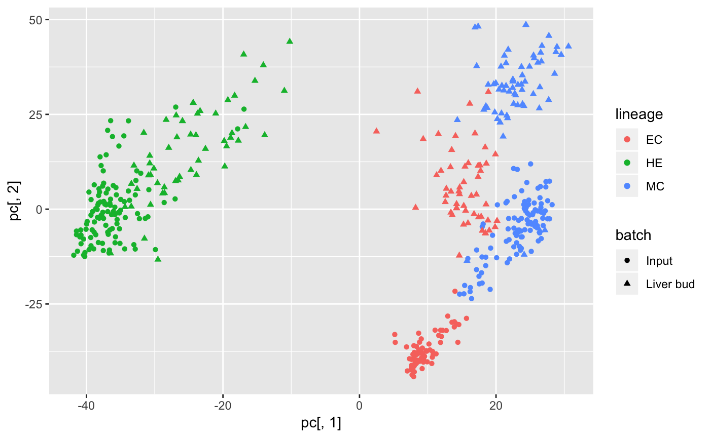
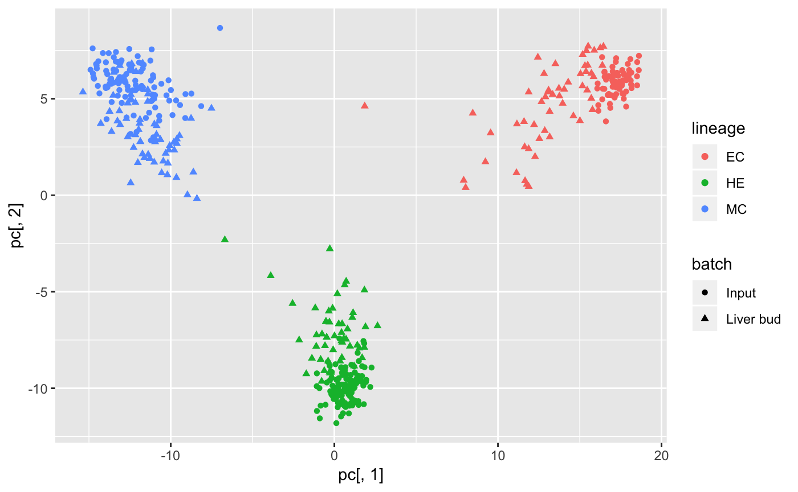

liver-bud.RmdIn this vignette, we analyze the liver bud dataset from Camp et al 2017
con <- gzcon(url("ftp://ftp.ncbi.nlm.nih.gov/geo/series/GSE81nnn/GSE81252/suppl/GSE81252_data.cast.log2.liverbud.csv.gz"))
txt <- readLines(con)
liverbud <- read.csv(file = textConnection(txt))
metadata <- liverbud[,1:3]
counts <- t(as.matrix(liverbud[,4:ncol(liverbud)]))
colnames(counts) <- metadata$cell_id
rownames(metadata) <- metadata$cell_id
metadata$LB_status <-
unlist(lapply(X = metadata$assignment_LB,
FUN = function(x) ifelse(test = grepl("LB",x),yes = "LB",no = "IN")
))
metadata$lineage <-
factor(unlist(
lapply(X = metadata$assignment_LB,
FUN = function(x) strsplit(as.character(x),split = "-",fixed = T)[[1]][1])
))
table(metadata$LB_status,metadata$lineage)
#>
#> EC HE MC
#> IN 74 113 104
#> LB 53 54 67library(scran)
#> Warning: package 'scran' was built under R version 3.5.1
#> Loading required package: BiocParallel
#> Warning: package 'BiocParallel' was built under R version 3.5.1
#> Loading required package: SingleCellExperiment
#> Warning: package 'SingleCellExperiment' was built under R version 3.5.1
#> Loading required package: SummarizedExperiment
#> Warning: package 'SummarizedExperiment' was built under R version 3.5.1
#> Loading required package: GenomicRanges
#> Warning: package 'GenomicRanges' was built under R version 3.5.1
#> Loading required package: stats4
#> Loading required package: BiocGenerics
#> Warning: package 'BiocGenerics' was built under R version 3.5.1
#> Loading required package: parallel
#>
#> Attaching package: 'BiocGenerics'
#> The following objects are masked from 'package:parallel':
#>
#> clusterApply, clusterApplyLB, clusterCall, clusterEvalQ,
#> clusterExport, clusterMap, parApply, parCapply, parLapply,
#> parLapplyLB, parRapply, parSapply, parSapplyLB
#> The following objects are masked from 'package:stats':
#>
#> IQR, mad, sd, var, xtabs
#> The following objects are masked from 'package:base':
#>
#> anyDuplicated, append, as.data.frame, basename, cbind,
#> colMeans, colnames, colSums, dirname, do.call, duplicated,
#> eval, evalq, Filter, Find, get, grep, grepl, intersect,
#> is.unsorted, lapply, lengths, Map, mapply, match, mget, order,
#> paste, pmax, pmax.int, pmin, pmin.int, Position, rank, rbind,
#> Reduce, rowMeans, rownames, rowSums, sapply, setdiff, sort,
#> table, tapply, union, unique, unsplit, which, which.max,
#> which.min
#> Loading required package: S4Vectors
#> Warning: package 'S4Vectors' was built under R version 3.5.1
#>
#> Attaching package: 'S4Vectors'
#> The following object is masked from 'package:base':
#>
#> expand.grid
#> Loading required package: IRanges
#> Warning: package 'IRanges' was built under R version 3.5.1
#> Loading required package: GenomeInfoDb
#> Warning: package 'GenomeInfoDb' was built under R version 3.5.1
#> Loading required package: Biobase
#> Warning: package 'Biobase' was built under R version 3.5.1
#> Welcome to Bioconductor
#>
#> Vignettes contain introductory material; view with
#> 'browseVignettes()'. To cite Bioconductor, see
#> 'citation("Biobase")', and for packages 'citation("pkgname")'.
#> Loading required package: DelayedArray
#> Warning: package 'DelayedArray' was built under R version 3.5.1
#> Loading required package: matrixStats
#>
#> Attaching package: 'matrixStats'
#> The following objects are masked from 'package:Biobase':
#>
#> anyMissing, rowMedians
#>
#> Attaching package: 'DelayedArray'
#> The following objects are masked from 'package:matrixStats':
#>
#> colMaxs, colMins, colRanges, rowMaxs, rowMins, rowRanges
#> The following objects are masked from 'package:base':
#>
#> aperm, apply
camp <- SingleCellExperiment(assays = list(logcounts = counts),colData = metadata)
IN <- camp[,camp$LB_status=="IN"]
LB <- camp[,camp$LB_status=="LB"]
out <- scran::multiBatchNorm(IN,LB,assay.type = "logcounts")
#> Warning in .batch_rescaler(batches, subset.row = nonspike.subset,
#> exprs_values = assay.type, : no size factors in batch 1, using sum of
#> counts instead
#> Warning in .batch_rescaler(batches, subset.row = nonspike.subset,
#> exprs_values = assay.type, : no size factors in batch 2, using sum of
#> counts instead
IN <- out[[1]]
LB <- out[[2]]
combined <- cbind(logcounts(IN),logcounts(LB))
pc <- prcomp(t(combined),rank. = 2)$xlibrary(ggplot2)
library(forcats)
lineage <- fct_c(IN$lineage,LB$lineage)
batch <- c(rep("Input",ncol(IN)),rep("Liver bud",ncol(LB)))
qplot(pc[,1],pc[,2],color = lineage,shape = batch)
data("res_list_liver_bud")
corgi_gene_set <- select_top_corgi_genes(res_list_liver_bud,300)
pc <- prcomp(t(combined[corgi_gene_set,]),rank. = 2)$x
qplot(pc[,1],pc[,2],color = lineage,shape = batch)